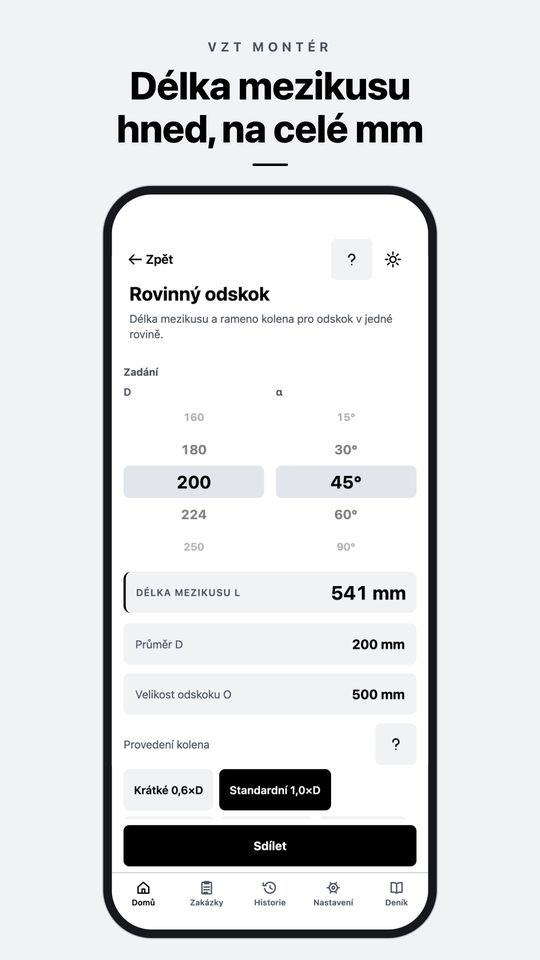
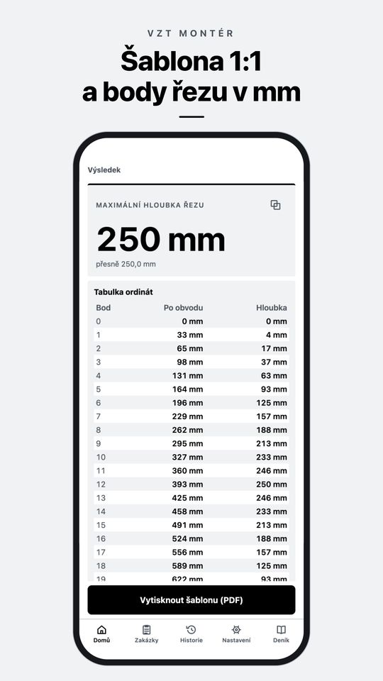
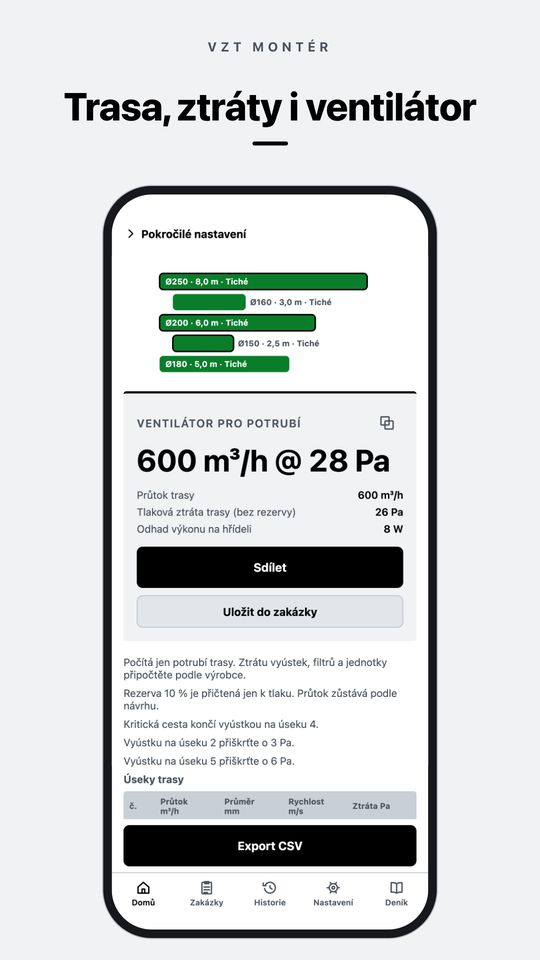
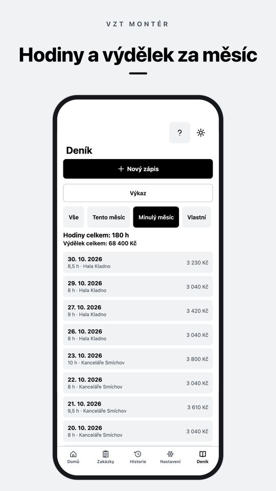
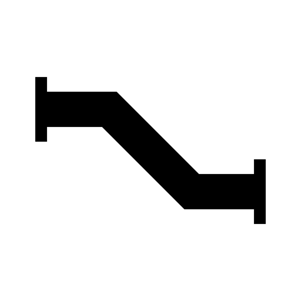

Aplikace pro iPhone a Android
Odskok, rozvin kolena a průtok vzduchu spočítáte přímo na stavbě
VZT Montér je kalkulačka pro montéry vzduchotechniky. Zadáte, co naměříte metrem, a dostanete délku mezikusu, šablonu rozvinu plechu 1:1 nebo tlakovou ztrátu trasy. Funguje offline a bez účtu.
Stažení zdarma. PRO je jednorázový nákup, žádné předplatné.

Kalkulačky pro vzduchotechniku online
Čtyři výpočty z aplikace VZT Montér, zdarma v prohlížeči. Počítají stejnými vzorci jako aplikace. Desetinná čísla můžete psát s čárkou.
Co VZT Montér umí
Vše běží v telefonu, bez internetu a bez účtu. Výpočty jdou uložit do historie nebo k zakázce.
Odskoky Zdarma PRO
Rovinný odskok na Spiro a odskok hranatého kanálu pro rádiusová, lomená i lomená kolena s lopatkami jsou zdarma. Prostorový odskok, odskok kolem překážky a vlastní úhel kolen v PRO.
Zaříznutí a rozvinutí PRO
Šikmý řez, segmentové koleno, odbočka (sedlo), přechod kruh na čtyřhran a kuželová redukce. Body řezu v tabulce na celé mm a PDF šablona 1:1 na listy A4 s kontrolní úsečkou 100 mm.
Přepočty Zdarma
Kruh na čtyřhran, průtok, rychlost a průměr, nejbližší rozměr Spiro a EN 1505, potřebný průtok vzduchu pro místnost a náhrada průřezu.
Návrh trasy a ztráty PRO
Úseky s odbočkami, dimenzování, tlaková ztráta, kritická cesta, přiškrcení u každé vyústky, ventilátor a výkaz materiálu.
Rychlá kontrola úseku PRO
Jeden úsek, hned výsledek: ztráta třením a tvarovkami, ventilátor, rosný bod a riziko kondenzace.
Zakázky, nabídka a deník Zdarma PRO
Výpočty k zakázce a PDF protokol, deník hodin s výdělkem za měsíc. Zdarma 3 zakázky a 14 dní deníku. V PRO bez omezení, s fotkami ze stavby, PDF výkazem hodin a nabídkou z ceníku.
Tabulky Zdarma
Řady Spiro a hranatých kanálů, součinitele místních odporů, drsnosti, poloměry kolen a doporučené rychlosti.
Do terénu
Denní režim je černobílý, aby byl vidět na slunci, noční režim do strojovny. Velká tlačítka do rukavic. Česky, slovensky, německy, polsky a anglicky.
Jak aplikace vypadá

Šablona 1:1 a body řezu v mm 
Trasa, ztráty i ventilátor 
Hodiny a výdělek za měsíc
Zdarma a PRO
Zdarma
Základ pro každou zakázku
- Rovinný odskok a odskok hranatého kanálu
- Přepočty a tabulky
- Historie výpočtů
- 3 zakázky
- Deník hodin na 14 dní
- Záloha dat do souboru
VZT Montér PRO
Jednorázový nákup
- Prostorový odskok, odskok kolem překážky, vlastní úhel
- Zaříznutí a rozvinutí se šablonou 1:1
- Návrh trasy, tlakové ztráty a ventilátor
- Neomezené zakázky, nabídka a PDF bez vodoznaku
- Deník bez omezení, fotky a PDF výkaz hodin
Zaplatíte jednou, nic se neobnovuje. Cenu ve vaší měně ukáže obchod.
Časté dotazy
Jak se počítá délka mezikusu u odskoku?
Z odskoku O a úhlu kolen α se spočítá diagonála C = O / sin α a od ní se odečtou dvě ramena kolen R · tan(α/2). Například Ø200 mm, odskok 500 mm a kolena 45° se standardním poloměrem 1,0×D dají mezikus 541 mm.
Funguje aplikace bez internetu?
Ano. Výpočty, zakázky i deník běží přímo v telefonu. Internet je potřeba jen při nákupu a obnovení PRO.
Je PRO předplatné?
Ne. PRO je jednorázový nákup, který platí napořád. Na novém telefonu ho obnovíte v Nastavení.
Kde jsou moje data?
Jen ve vašem telefonu, účet nepotřebujete. Zálohu uložíte do souboru a přenesete, kam chcete. Podrobnosti jsou v zásadách ochrany soukromí.
Na jakých telefonech a v jakých jazycích?
iPhone a telefony s Androidem. Aplikace je česky, slovensky, německy, polsky a anglicky.
Výsledek nesedí s praxí. Co s tím?
Napište na info@deriverge.com zadané hodnoty a co vám vyšlo. Výpočet prověříme. Další odpovědi najdete v podpoře.

Stáhněte si VZT Montér
Zdarma ke stažení pro iPhone a Android. PRO jednorázově, bez předplatného.